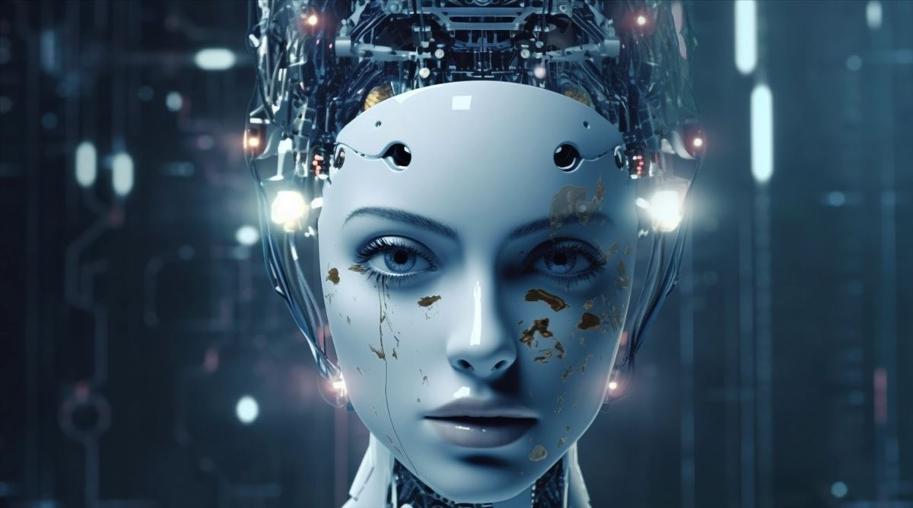
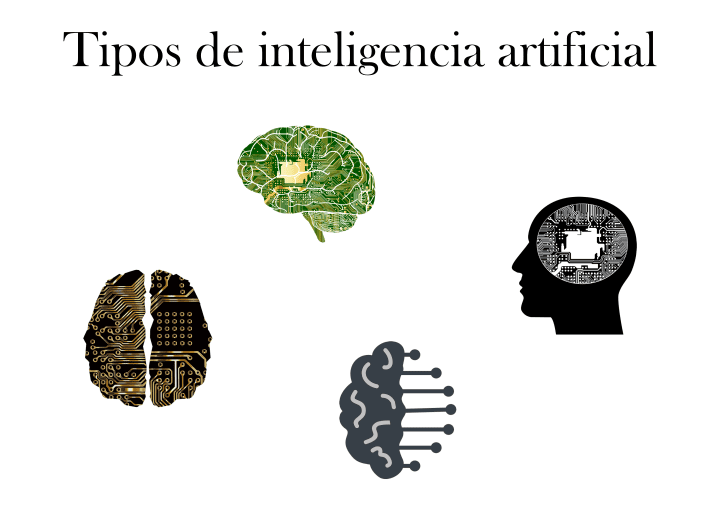

INTELIGENCIA ARTIFICIAL
¿Que es la inteligencia artificial?
La Inteligencia Artificial (IA) es la combinación de algoritmos planteados con el propósito de crear máquinas que presenten las mismas capacidades que el ser humano.
Uso de inteligencia artificial en nuestro día a día
Los asistentes de voz como:Siri o Alexa
Los smartphones
El monitoreo de las redes sociales

¿Cuáles son los tipos de inteligencia artificial que existen?
Sistemas reactivos
Las máquinas reactivas constituyen el tipo más básico de IA puesto que se basan en la toma de decisiones sobre el presente. Al carecer de memoria es imposible que aprendan de experiencias y por tanto no existe una evolución de ninguna índole.
Memoria limitado
máquinas que sí son capaces de mirar al pasado. Los vehículos autónomos son un ejemplo de ello, puesto que pueden observar la velocidad y dirección de otros automóviles y monitorearlos a través del tiempo. En este sentido, se desarrollan habilidades como cuando el vehículo toma decisiones acerca de cuándo cambiar de carril o realiza alguna maniobra para evitar ser embestido. Pese a lo anterior, dicha experiencia sobre el pasado es transitoria, ya que no se guarda dentro de la biblioteca de experiencias del automóvil y por ende no puede compilar la información durante años, como lo haría un ser humano
Teoría de la mente
Las máquinas de esta categoría son más avanzadas, ya que no solo forman representaciones sobre el mundo, también sobre otros agentes, a esto se le denomina “teoría de la mente” e implica la comprensión de que toda entidad es capaz de tener pensamientos y emociones que afectan su patrón conductual.
Autoconciencia
Como paso final del desarrollo de la Inteligencia Artificial se espera construir sistemas que puedan formar representaciones no solamente sobre el mundo sino sobre sí mismos, es decir, que tengan conciencia y sean capaces de conocer sus estados internos y comprender los sentimientos de los demás.

Ventajas y beneficios de la inteligencia artificial
Automatización de procesos
Agiliza la toma de decisiones
Fomenta la creatividad
Mejora la precisión
Desventajas de la inteligencia artificial
Dependencia de los datos
Menos personal cualificado
Desinformacion